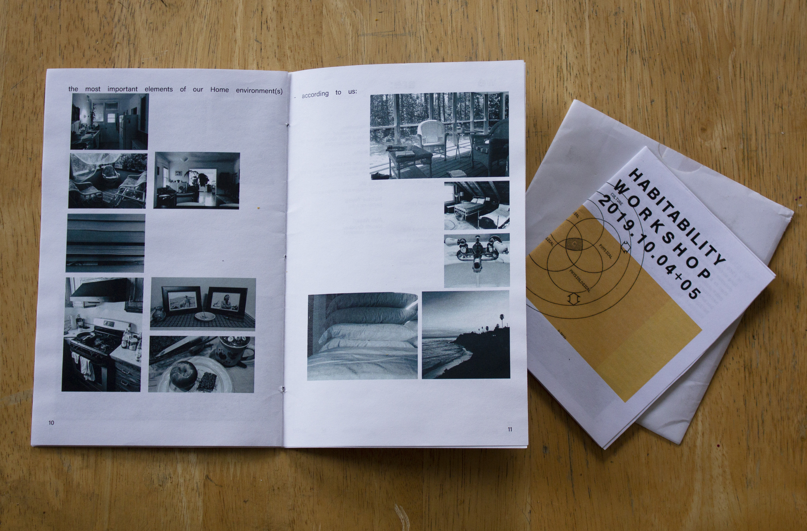
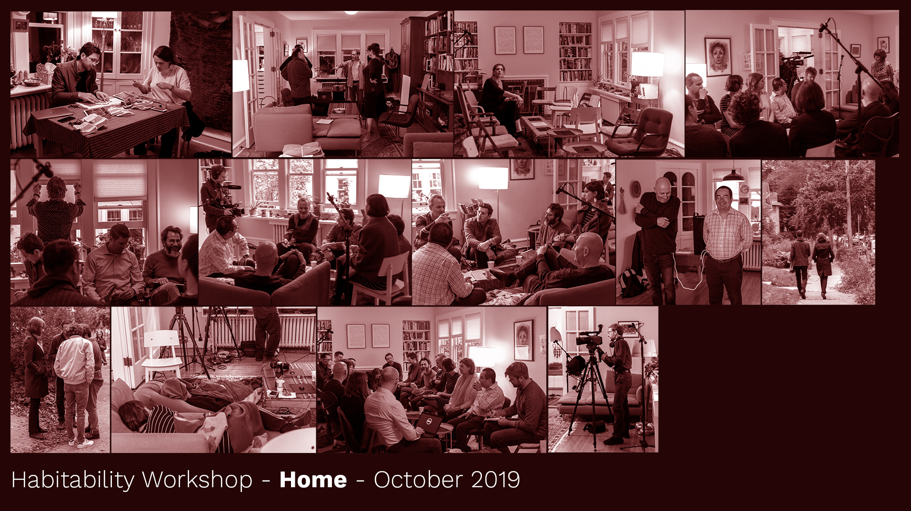
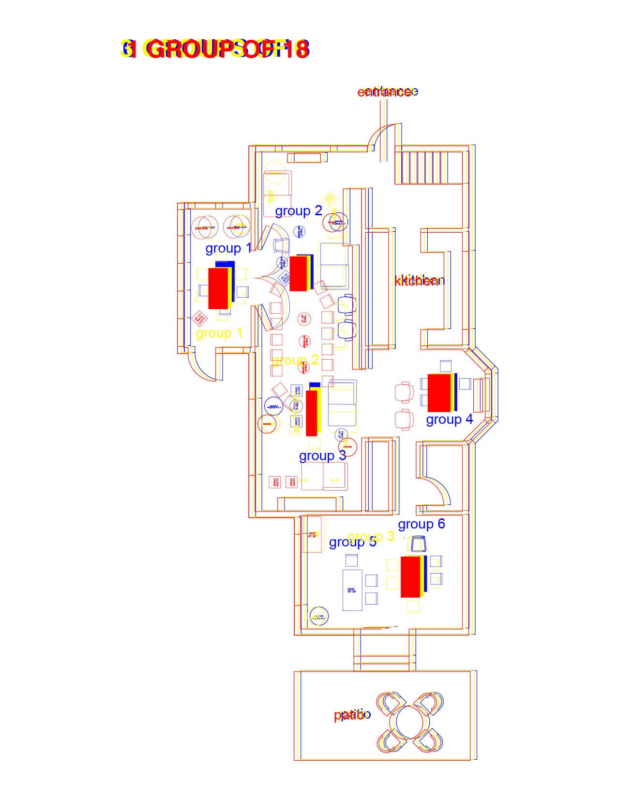
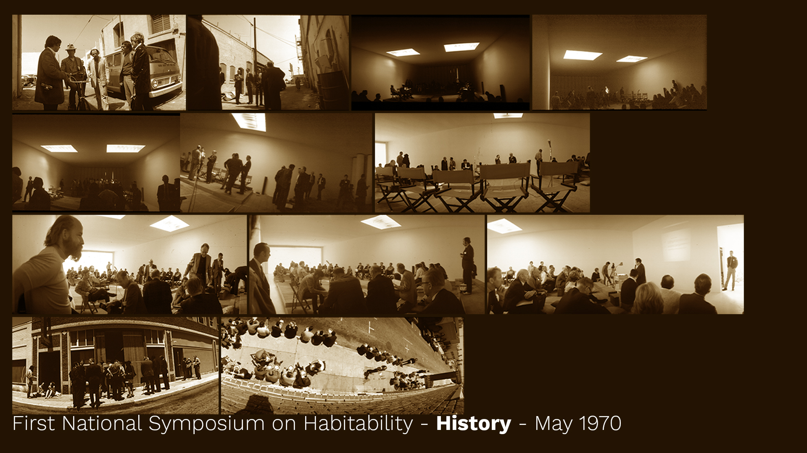
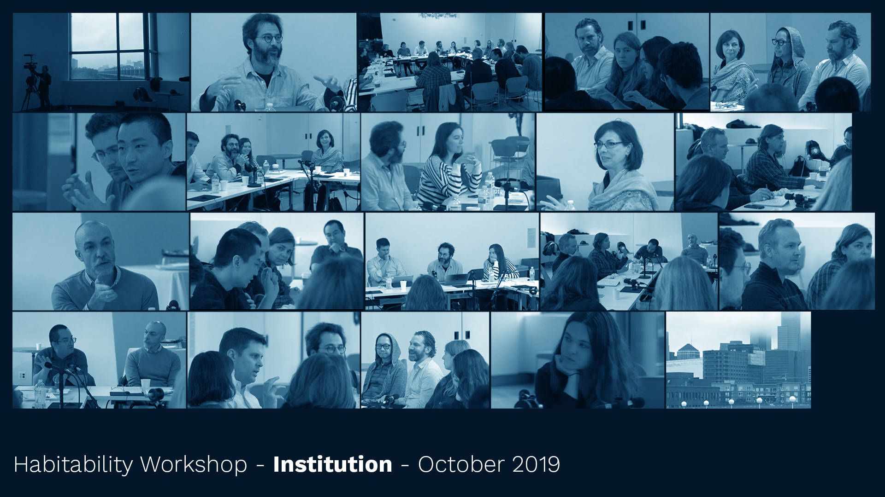

Habitability Project
This collaborative project is a workshop event that took place 04 and 05 October 2019 in Minneapolis, at the Weisman Art Museum and at the home of Boris Oicherman.
with Interesting Tactics
Curator: Boris Oicherman
Collaborators: Peng Wu, Marcus Young, Naomi Crocker
ONLINE AT:
Weisman Art Museum project brief

In 1970 the artist Robert Irwin partnered with space psychologist Ed Wortz to design NASA’s First National Symposium on Habitability of Environments.
49 years later, we convened the Habitability Workshop to make the first steps towards planning a Second National Symposium on Habitability. We gathered a cohort of collaborators from the arts, commercial space exploration, architecture, space medicine, anthropology and art history to consider the question:
What fields of knowledge and ways of knowing are necessary to address the notion of a habitability beyond ‘life support’?
Interesting Tactics joined the Habitability Project in summer 2019. We partnered with curator Boris Oicherman and artists Peng Wu and Marcus Young to design a workshop as an open emergent structure to support multiple evolving conversations, without imposing content
We carefully arranged the 20 participants into multiple groupings over the weekend of the workshop, playing the neighborhood, the space, and the furniture within it like a game. The workshop was thoroughly documented, to emulate the 1970 symposium and create a record of thought, which introduced another spatial complexity. The majority of the workshop occurred in Boris’ home, nearby to my own in a leafy neighborhood of Minneapolis.

Our Habitability Workshop began with a question:
what is everything that a person needs to inhabit an environment? This demanded an expansion of scope: Which person? Who decides? Who is everyone?
The workshop in 2019 was a testing ground for design approaches. It took place in a private home, in a museum, and in the neighborhood. We experimented with the structure of conversations, devising an openly evolving “scaffold” structure in which conversations organically progress from small groups to the entire cohort. This experience encouraged us to see the athering place more as a “social sculpture” and less as a physical or architectural environment. Our goal became to shape the entire social infrastructure of the conversation rather than its physical setting.
Working with Boris, I.T., Peng, and Marcus to plan the Habitability Workshop involved coordinating not only a set of logistics, but a set of ideas. Arranging personal identities and epistemological frameworks, based on knowledge and also assumptions, created a specific conversation; an event of design.
The project also provided as an introduction into the conflictual power of institution. The project is funded by the Warhol Foundation and Weisman Art Museum, and I.T. was hired by the project. We benefited from this institutional support, as well as the hivelike network of institutions that come into an academic and artistic project of this nature.
Planning is currently underway for the Second National Symposium on Habitability. The project in 2021 is international, and includes close collaboration with Neal White from Office of Experiments in London, Peng Wu, artist currently in China, Boris Oicherman, curator, and Interesting Tactics.
